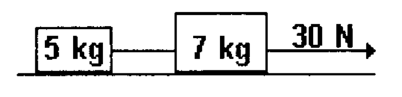

Two masses of 5.0 and 7.0 kg are originally at rest on a frictionless surface. The masses are connected by a light cord. A second cord is attached to the 7.0 kg mass and pulled with a horizontal force of 30 N. What is the tension in the cord that connects the two masses?